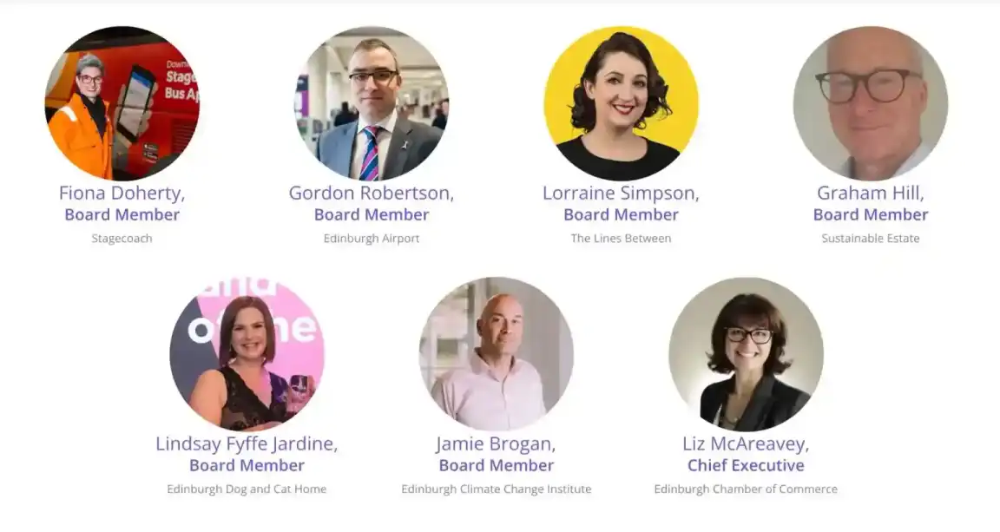
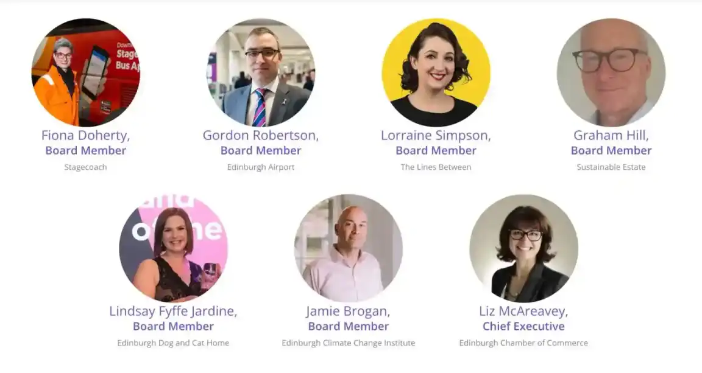

Launchpad Build
Edinburgh's AI Trade Success
Amidst the cobbled streets and gothic spires of Edinburgh, a new frontier of innovation is unfolding. One where robotics and artificial intelligence shape the future. In December 2024, the rhythmic whir of machinery and the soft hum of servers filled the halls of Launchpad Build, an AI powerhouse expanding from Los Angeles to Scotland’s capital. Backed by a £2 million Scottish Enterprise grant, their sleek new R&D hub is a beacon of technological ambition, drawing the brightest minds to develop next-generation automation. The air crackles with the energy of creation as engineers and programmers fine-tune robotic algorithms, their screens aglow with the promise of breakthroughs that will redefine industries worldwide. More than just a business expansion, Launchpad’s presence cements Edinburgh’s reputation as a global tech leader, where historic charm meets the cutting edge of human ingenuity.
Wind Power Farms
Global Energy Sellers
Beneath the vast, sweeping skies of Scotland’s rugged coastline, colossal wind turbines turn with steady grace, harnessing the untamed power of the North Sea. Once a land of oil and gas dominance, Scotland has transformed into a renewable energy titan, with its wind farms now generating surplus electricity capable of powering millions of homes beyond its borders. In recent years, Scotland has exported record-breaking amounts of clean energy to Europe, with interconnectors linking its offshore wind farms to countries hungry for sustainable power. The deep hum of rotating blades and the crisp scent of salt in the coastal air serve as reminders of this energy revolution. One that positions Scotland as a global leader in the transition to net zero. As wind-whipped waves crash against the shores, Scotland’s energy is no longer just fuelling its own progress; it’s lighting up cities across the continent, proving that the future of global power is clean, green, and undeniably Scottish.
Carbon Removers
Sustainability Success
Deep in the heart of Scotland’s green energy revolution, Carbon Removers is sculpting a future where the air we breathe is clearer and more sustainable. With the hum of innovation echoing from their Edinburgh headquarters, this pioneering firm has mastered the art of engineered carbon removal, transforming Scotland’s abundant biomass into a powerful tool for reversing emissions. In 2024, their groundbreaking partnership with the Danish government propelled them onto the global stage, securing contracts to deliver biogenic carbon removal credits—a monumental step in Europe’s fight for a net-zero future. Each molecule of CO₂ they capture is permanently stored deep beneath the North Sea, ensuring that what once polluted our skies now fuels a cleaner tomorrow. Scents of damp earth lingers in the air at their sequestration sites, a quiet testament to their work turning atmospheric waste into a lifeline for the planet.

 
